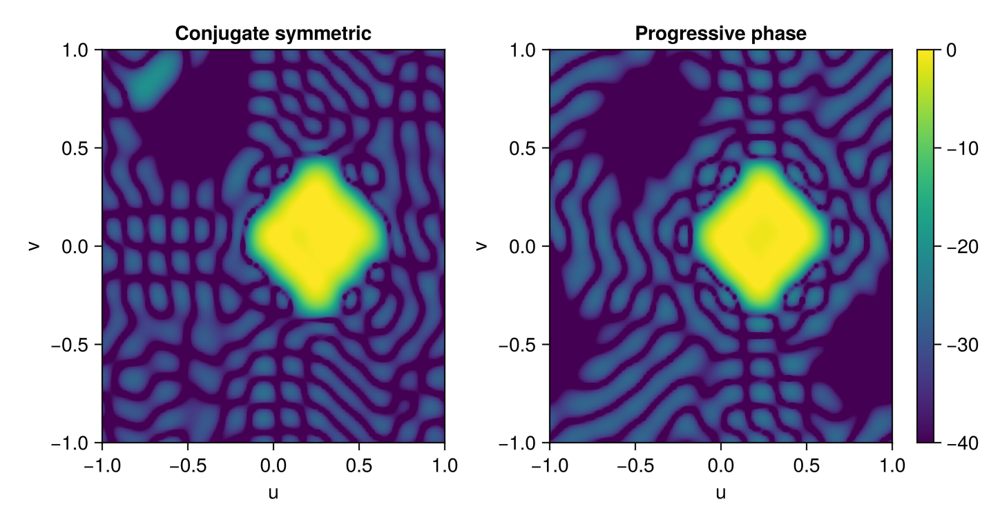

Planar shaped beam
This example moves from angular intervals to regions in the visible u,v plane. The main beam is a diamond-shaped region, and a separate circular region is forced to a deep null.
using ArraySynthesis
using ArraySynthesis: °, dB
using GLMakie
using HiGHS
array_full = planar_array(16, 16, dx = 0.5, dy = 0.5)
array = SymmetricArray(symmetrize(array_full.positions)...)uv(θ, ϕ) converts an angular direction into direction cosines. Shapes are then sampled into Regions.
focus = uv(14°, 12°)
beam_shape = rhombus((focus.u, focus.v), 16°)
beam_region = region(beam_shape, step = 2°)
null_dir = uv(-55°, -55°)
null_shape = ArraySynthesis.Circle(0.3, (null_dir.u, null_dir.v))
null_region = region(null_shape, step = 2°)The sidelobe region is the visible square grid excluding beam and null guards.
sl_region = visible_region(beam_shape, null_shape; step = 4°, bandpass = 0.12)
p = pattern(
shaped_beam(beam_region, 1.0, ripple = -1dB),
sidelobes(null_region, -50dB),
)
obj = MinSLL([sl_region])Compare a real-AF conjugate-symmetric solution with a fixed progressive phase solution centered on the desired beam.
result1 = synthesize(array, p, obj, ConjugateSymmetricWeights(), LP(), HiGHS.Optimizer)
result2 = synthesize(array, p, obj, ProgressivePhaseAmplitude(focus), LP(), HiGHS.Optimizer)
U = V = collect(-1.0:0.02:1.0)
dirs = [UVDirection(u, v) for u in U, v in V]
af1 = array_factor(array, ConjugateSymmetricWeights(), result1.weights, dirs)
af_vals1 = reshape(20 .* log10.(abs.(getindex.(af1, 1)) .+ 1e-12), length(U), length(V))
af2 = array_factor(array, ProgressivePhaseAmplitude(focus), result2.weights, dirs)
af_vals2 = reshape(20 .* log10.(abs.(getindex.(af2, 1)) .+ 1e-12), length(U), length(V))
fig = Figure()
ax1 = Axis(fig[1, 1], xlabel = "u", ylabel = "v", title = "Conjugate symmetric")
image!(ax1, (-1, 1), (-1, 1), af_vals1, colorrange = (-40, 0), colormap = :viridis)
ax2 = Axis(fig[1, 2], xlabel = "u", ylabel = "v", title = "Progressive phase")
image!(ax2, (-1, 1), (-1, 1), af_vals2, colorrange = (-40, 0), colormap = :viridis)
Colorbar(fig[1, 3], colorrange = (-40, 0), colormap = :viridis)
figThe documentation includes a precomputed result image, so this example is shown without being executed by Documenter.

This page was generated using Literate.jl.